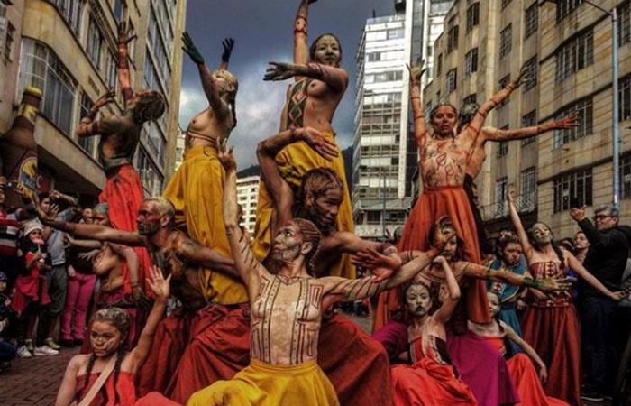

FESTIVAL IBEROAMERICANO DE TEATRO
 La magia de los cuerpos y las voces se apoderan ya hace 3 décadas, de los diferentes escenarios que se toman a Bogotá cada dos años durante 17 días, tiempo en el cual el talento nacional y extranjero se muestra en su máxima expresión.Bajo el lema “Un acto de fe en Colombia” en 1988 con motivo de la celebración de los 450 años de la fundación de Bogotá se creó el Festival que ha sobrevivido 3 décadas integrando las mejores manifestaciones artísticas de los países latinoamericanos ante el mundo.
El motor de este evento fue Fanny Mikey, actriz y empresaria oriunda de Argentina, quien convirtió el Festival en el máximo representante y con mayor trascendencia en Colombia y el mundo.
Siempre hay una excusa para viajar a Bogotá y el Festival de Teatro con todo ese despliegue, si que merece estar en la capital de Colombia y tener unos días de esparcimiento, gracias a las mejores presentaciones de las artes escénicas nacionales e internacionales.El objetivo de este evento consistía en mostrar la diversidad y la pluralidad de los diferentes géneros y tendencias de las artes escénicas en el mundo, confrontando las diversas expresiones de las culturas, y hasta hoy ha influido en el crecimiento del entendimiento, tolerancia y participación de diferentes culturas, además del gran crecimiento de desarrollo artístico en Colombia. Su primera versión fue realizada el 25 de marzo hasta abril 3 de 1988, con el propósito de promover la integración artística de diferentes países y culturas.
FESTIVAL FOLCLÓRICO Y REINADO NACIONAL DEL BAMBUCO
| El Festival y Reinado Nacional del Bambuco reúne a cientos de turistas nacionales y extranjeros, quienes hacen parte de este gran evento que resalta el folclor huilense con música, bailes, comparsas y gastronomía autóctonas que han adquirido una identidad de índole nacional. En sus inicios, la celebración ha sido netamente familiar de origen campesino, transmitida de generación en generación con el ánimo de preservar la tradición y legado de los Opitas. Ahora, el festival se ha convertido en un referente cultural y popular de la nación en donde se baila, se tocan aires musicales (Bambucos y pasillos), donde se toman bebidas y se comen alimentos especiales como el tradicional Asado huilense, el Tamal, el bizcocho de Achira, Mistela y el aguardiente Doble Anís. | El origen de esta fiesta viene desde la época colonial en honor a San Juan para las celebraciones rurales y a San Pedro para las urbanas. El 24 de junio era costumbre que las familias salieran de paseo a la orilla del río y luego prepararan el asado tradicional. El 29 de ese mismo mes se llevaban a cabo varias actividades en el casco urbano como la cabalgata, la vara del premio, pólvora, aguardiente y por supuesto no podía faltar la música autóctona. | ||
| Con el tiempo se unieron estas dos celebraciones, convirtiéndose en la fiesta oficial para las cual se estandarizaron los vestidos típicos del hombre y la mujer, la coreografía del Sanjuanero huilense y los eventos a realizarse durante la jornada. Estos eventos han ganado relevancia para ser mostrados en desfiles por las calles principales de Neiva como las comparsas locales y de las delegaciones que llegan de diferentes ciudades de Colombia. | Durante los desfiles vas a ver carrozas y comparsas que muestran el joropo llanero, el Carnaval de Barranquilla, los “Yipaos” del eje cafetero y la gran muestra folclórica de los grupos de danzas que reflejan porqué el bambuco huilense se ha hecho famoso con su baile típico del Sanjuanero.Con el objetivo de mantener viva la tradición y folclor del departamento, a partir del mes de abril se realizan diversos eventos de tipo cultural y artístico en Neiva y en algunos municipios del Huila como preámbulo del festival. | Las cabalgatas también son protagonistas, como el desfile de la Cacica Gaitana en la que solo participan mujeres y es una de las más tradicionales. El recorrido inicia en el monumento a la madre tierra, siguiendo por la Avenida Circunvalar hasta el Parque El Caracolí. En el marco del festival, se realizan muestras representativas que destacan la tradición familiar y generan espacios de intercambio cultural con los propios y visitantes que también se hacen partícipes cada año. | |
| El misticismo también entra en escena, a lo largo del río Magdalena desfilan embarcaciones con máscaras que hacen alusión a los personajes del Tolima Grande como la Llorona, la Madremonte, el Mohán, la Muelona, la Patasola, el Duende y el Sombrerón. | |||
| En Colombia no hay festival sin reina y este no es la excepción. Cada año participan cerca de 30 candidatas de las diferentes ciudades del país, quienes además de belleza y conocimientos de cultura general, deben demostrar sus capacidades en el baile típico de su región y del Sanjuanero que representa el 50% del puntaje. | La comitiva de cada participante también juega un papel fundamental en la elección y coronación de la Reina Nacional del Bambuco que se lleva a cabo desde el 2017 en el Parque de Música Jorge Villamil Cordovez. | Paralelo a las demás actividades, se lleva a cabo los concursos nacionales de composición “Jorge Villamil Cordovez” e interpretación “Anselmo Durán Plazas” en el que pueden participar artistas de cualquier región del país. | Cada año, más de un centenar de artistas llegan a hacer gala de sus cualidades musicales. En composición gana quien presente la mejor obra inédita vocal e instrumental y en interpretación se premia al que supere a los demás en la modalidad instrumental y en la vocal. Así mismo se elige a quien se destaque como tiplista y al mejor intérprete de la bandola. |